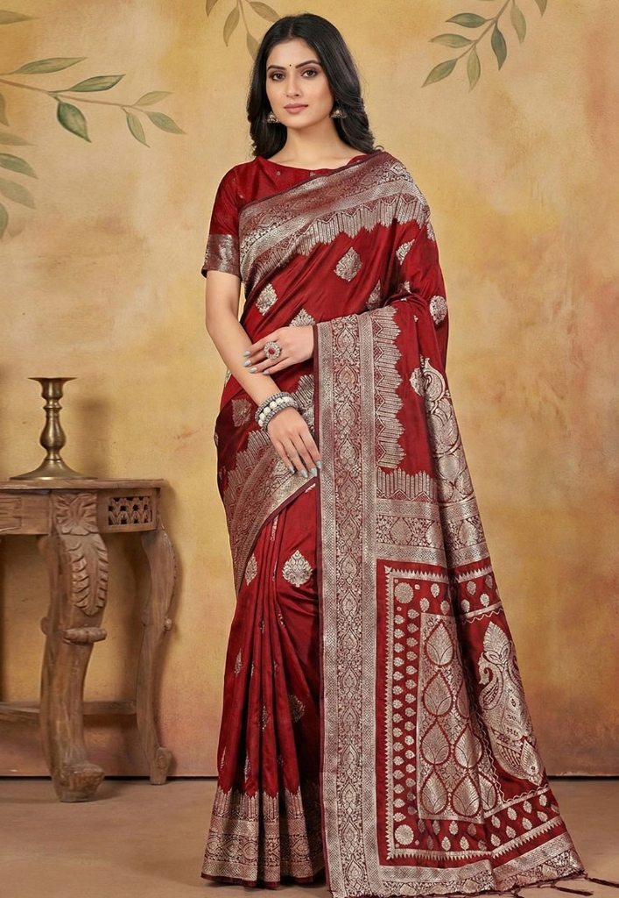

Aura started in a small studio in Jaipur — a few rolls of handloom fabric, a master tailor who'd been stitching for thirty years, and one stubborn idea: that Indian ethnic wear should feel as effortless as it looks. No shortcuts. No mass production. Just honest, beautiful pieces made the way they were always meant to be.

We believe draping a saree should feel like a ritual, not a chore. That wearing a kurti to the market should feel just as special as wearing a lehenga to a wedding. Every piece we curate is designed for real women living real lives — not mannequins.
We work directly with weavers in Varanasi, block printers in Sanganer, and kalamkari artisans in Srikalahasti. No middlemen. Every piece carries the fingerprint of the person who made it.
"We don't just sell clothes. We carry forward the hands that weave them."
Our fabrics come from trusted handloom cooperatives — Banarasi silk that shimmers like water, Chanderi cotton so fine you'd swear it was woven from air, and hand-block prints that are never identical because that's the beauty of handmade things.
This isn't fast fashion. This is slow, intentional, deeply Indian fashion — for women who understand that the best things take time and the best drapes tell stories.
Every piece is handcrafted by artisans we know by name — weavers in Varanasi, printers in Jaipur. We pay fairly. We don't rush. We don't negotiate on craft.
From Kanchipuram silks to Lucknowi chikankari, our designs honour centuries of Indian textile tradition while keeping the silhouettes modern and wearable.
Natural fabrics, hand-finished seams, minimal packaging. We'd rather you buy one saree you'll wear for twenty years than five that fall apart after two washes.